다음 세션의 완성 순서
| 1 · 판벽부터 | 사랑채의 넓은 판벽 Sarang floor grain 0~2, 중문채 부속 판벽 Jung plank 0~3에는 이전 재질이 남았습니다. 새 목재가 기둥·보만 바꾸고 끝나지 않도록 넓은 면까지 먼저 마무리합니다. |
|---|---|
| 2 · 돌 상면·계단 | 기단 윗면의 불규칙 돌을 기준으로 큰 디딤돌·착지석·계단의 남은 매끈함과 줄무늬를 검토합니다. 마당은 흙으로 유지합니다. |
| 3 · 건물별 화풍 | 안채의 사진 명암과 흐릿한 결을 우선 다듬고 나머지 건물도 한 채씩 확인합니다. 목재는 각기 다르게, 기와·회벽·돌은 같은 화풍으로 조화시킵니다. |
| 4 · 고택 전체 | 담과 기단의 겹침, 문 회전 공간, 꽃담·지붕 이음, 누락·중복을 전체/배치/마당 화면에서 확인합니다. 승인된 창고 접점은 유지합니다. |
| 5 · 정원과 앱 | 본 건물 미술을 확인한 뒤 정원·정자를 작업합니다. 이후 앱 조작·모바일 성능·용량 검증과 런타임 적용을 진행합니다. |
기존 작업트리 C:\dev\hangulsori\ko_lernen_app_worktrees\hanok-hwalju-20260928, 브랜치 codex/hanok-hwalju-20260928에서 이어갑니다. 한 번에 눈에 보이는 미술 문제 하나를 해결하고 같은 카메라 전후 2~3장과 전체 화면으로 확인합니다. 자세한 완성 계획과 코드 진입점
사랑채·중문채 목재와 기단 윗면
사랑채에는 따뜻한 오래된 목재, 중문채에는 더 차분하고 짙은 결을 따로 그렸습니다. 현재 3개 목재 재질에 적용했고 넓은 판벽은 다음 작업입니다. 기단 윗면에는 12채와 사당문에 2,196개 얕은 불규칙 돌을 더했습니다. 모든 계단을 새로 만든 것은 아닙니다.
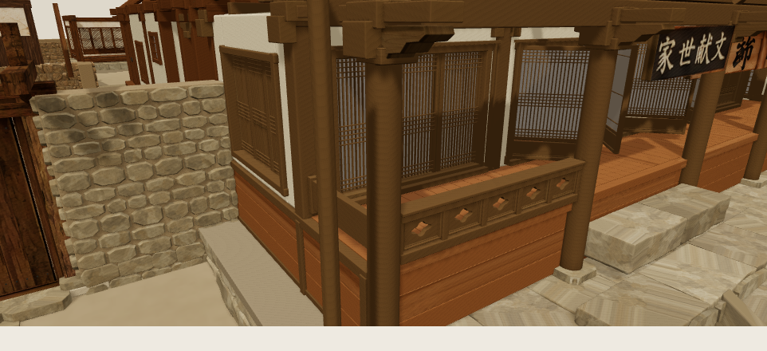
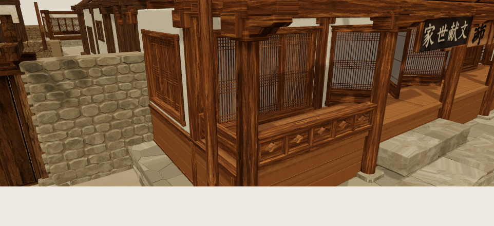
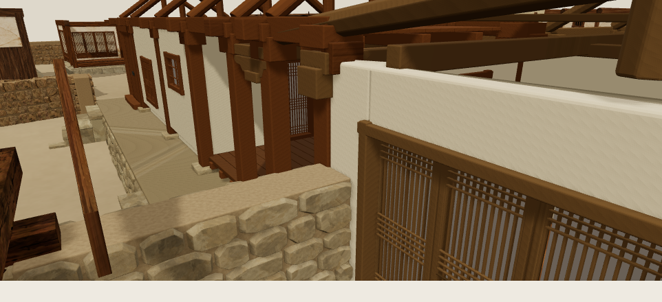
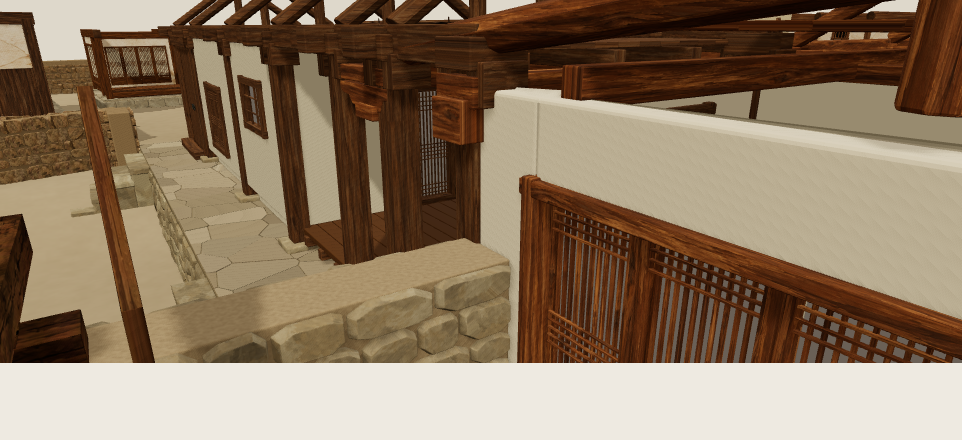
목재를 볼 수 있도록 네 확대 화면에서 지붕을 숨겼습니다. 기본 화면에서는 기와가 보입니다. 새 돌은 건물 기단·계단·주변 돌 포장 범위이며 흙마당은 유지합니다.
곳간채 뒤 담과 기단의 여백
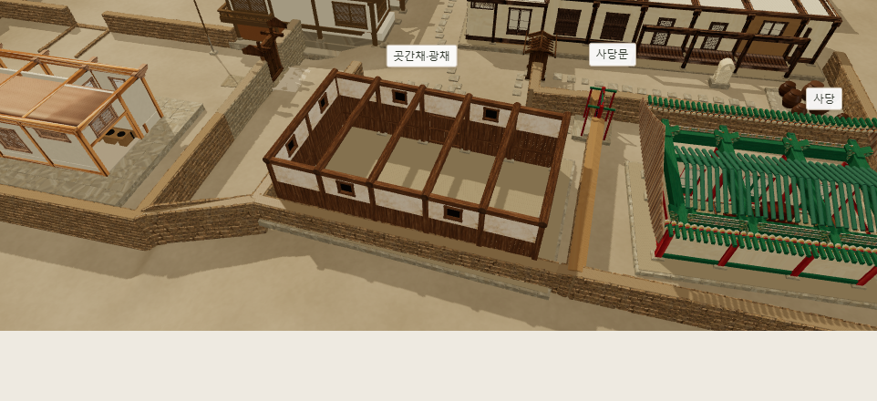
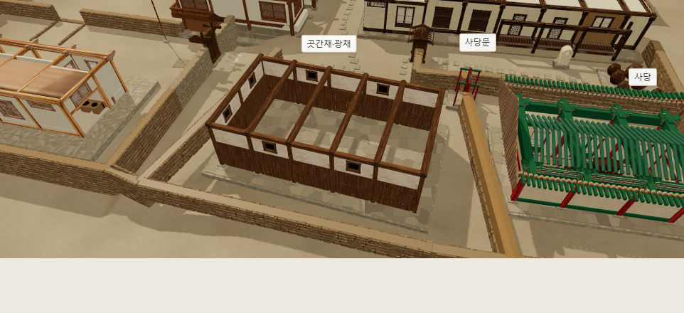
담의 돌·벽체·기와·밑돌을 함께 옮기고 꽃담 문양은 늘이지 않았습니다. 두 화면은 같은 카메라로 기단을 보기 위해 지붕을 숨겼습니다. 최신 3D 간격 보기
지금 확인된 상태
창고 정본
앱 런타임 완성 이미지와 작업에 쓴 창고 원화가 SHA-256까지 동일합니다. 승인된 여섯 칸 창고와 12짝 판문을 기준으로 봅니다.
최신 장면 로드
Blender 장면 생성과 웹 내보내기가 끝났고, 브라우저에서 같은 장면 해시를 로드했습니다. 기존 벽·텃밭 작업도 이 후보에 들어 있습니다.
창고 판문 질감
승인된 창고 원화의 판문 영역을 12짝 전체에 각각 대응하도록 다시 매핑했습니다. 브라우저에서 문짝·고리의 구분을 확인했으며 정본과의 최종 미술 대조는 계속합니다.
곳간채 뒤 담 여백
연결된 담 6구간·44개 메시를 조정했습니다. 긴 뒤 담의 벽체 중심부와 기단 사이 간격은 1.116m입니다. 건물 위치와 꽃담 문양은 유지했고 같은 카메라의 전후 화면으로 빈 공간을 확인했습니다.
목재·기와·회벽·돌
기와 51개·목재 25개 재질의 반사를 맞추고 목재 부재 165개의 모서리를 서로 다르게 깎았습니다. 안사랑채·안채 목재색과 사당 박공판도 조정했습니다. 회벽·흙벽 81개와 돌 374개 메시의 안료 질감은 유지합니다. 전체 미술 검토는 진행 중입니다.
사당 뒤 정원·정자
나무·정자 초안의 완성도가 목표에 맞지 않아 현재 3D 검토 장면에서 제거했습니다. 지금은 고택 본 건물의 화풍을 먼저 다듬습니다.
현재 전체 모습
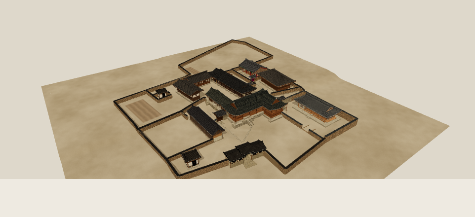
목재 모서리에 얕은 깎임을 달리했습니다
기둥·보·판재의 모서리를 같은 폭으로 둥글리던 부분을 조정했습니다. 부재와 모서리마다 깎임 폭을 달리하고 두 단계의 면으로 표현했습니다. 원래 외곽과의 최대 차이는 약 4.9mm로, 가까이서 보이는 작은 변화입니다. 건물 축·원래 목재 좌표와 문짝·경첩·현판은 보존했습니다.


원본 부재의 기본 형태는 유지했고 표시되는 모서리 표면만 바뀌었습니다. 네 화면은 목재를 보기 위해 지붕을 잠시 걷었습니다. 안채의 사진 질감에 남은 큰 명암과 흐릿한 결은 후속 미술 수정 대상입니다. 이 모서리 수정만으로 전체 화풍이 완성된 것은 아닙니다.
노란 목재를 차분한 밤색 계열로
밝은 노란빛이 강하던 안사랑채 목재와 안채 목재의 채도·밝기를 조정했습니다. 각 건물의 원래 결, 부재마다 다른 무늬 위치와 기존 문 조작은 유지했습니다. 승인된 창고 원화와 세 채의 새 목재 질감은 원래 해상도로 웹에 전달합니다.

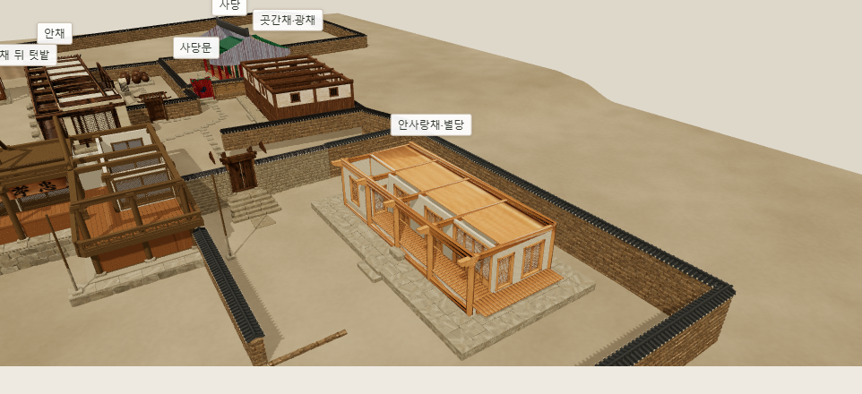

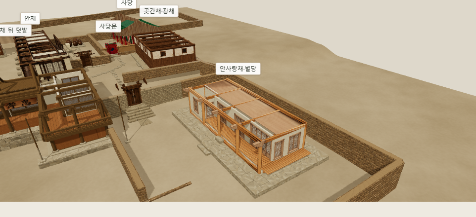

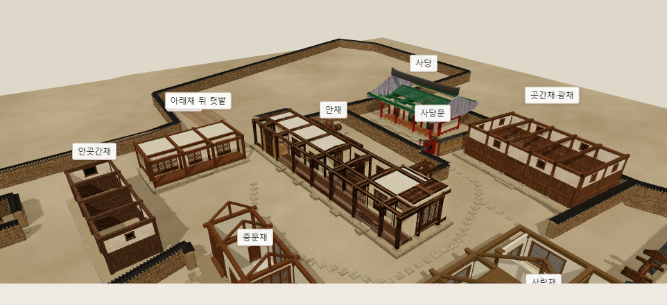

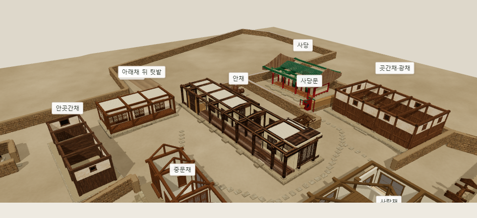
각 수정 전후 쌍은 같은 카메라입니다. 목재를 보여주기 위해 이 네 화면만 지붕을 걷었습니다. 기본 3D에서는 지붕이 보입니다.
사당 박공판은 별도의 손그림 결로
실사진의 하얗고 보라빛으로 바랜 박공판이 그대로 들어가 주변과 다른 화풍으로 보였습니다. 손으로 칠한 바랜 회갈색·밤색 결을 새로 만들고 박공판 872면에 적용했습니다. 판재 간격과 원래 무늬 좌표, 붉은 기둥·단청은 유지했습니다.

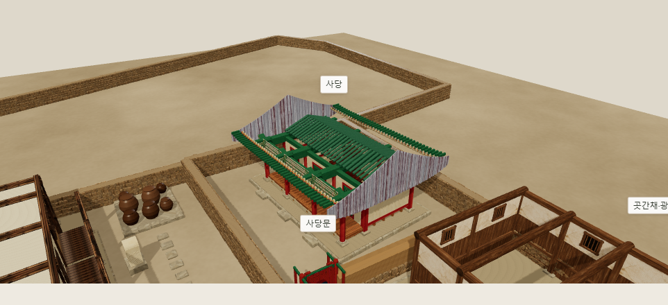

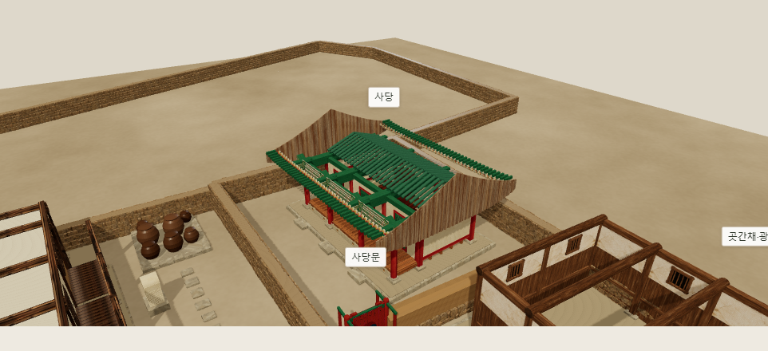
두 화면은 박공판을 보기 위해 기와를 숨겼습니다. 사당의 원본 사진은 보존했고, 새 그림이 웹에 같은 바이트로 들어간 것과 기존 좌표를 검사했습니다.
박공판 그림과 생성 설정

기단·계단의 돌 질감을 다듬었습니다
사랑채의 단색 돌과 안사랑채의 희고 균일한 판석을 따뜻한 회갈색 계열로 맞췄습니다. 29개 돌 재질, 374개 메시의 무늬 시작점·각도·크기를 달리해 반복을 줄이고, 건물별로 밝기와 흙빛을 구분했습니다.

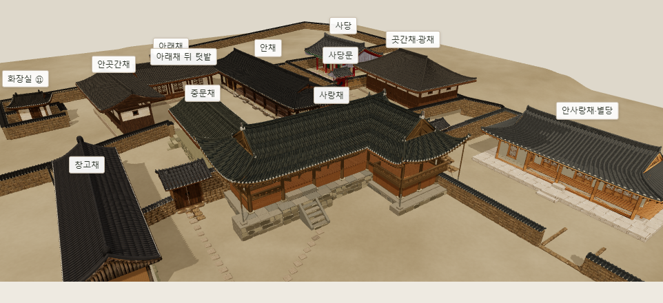

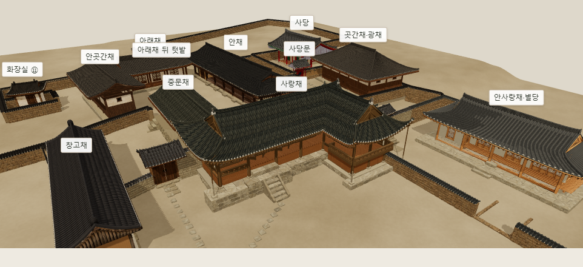

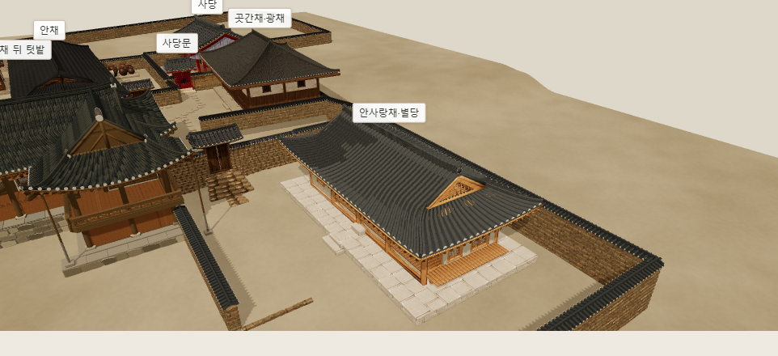

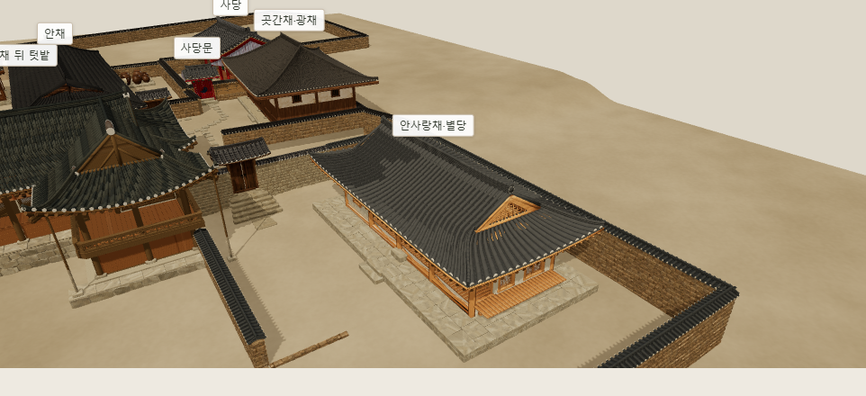
각 수정 전후 쌍은 같은 카메라로 촬영했습니다. 이번 수정은 돌 표면의 색과 질감에 적용됐습니다. 돌 크기·계단 높이·기존 UV 좌표는 보존했으며, 고택 전체의 추가 목재·돌 상면·곳간채 뒤 간격 검사도 통과했습니다. 넓은 판벽과 전체 미술 검토는 다음 작업으로 남았습니다.
돌 안료 원본과 생성 설정

기와지붕은 그대로 있습니다
목재 구조를 확인하려고 3D 뷰어의 지붕 걷어 보기 버튼을 잠시 켠 화면을 공유했습니다. 실제 장면 파일에는 지붕이 남아 있고, 기본 3D 화면에서는 지붕이 보입니다. 숨긴 화면에서 지붕 다시 보기를 누르거나 페이지를 새로 열면 다시 나타납니다.
기와의 곡선과 처마 장식은 건물별 형태대로 두고, 사당·안사랑채·사당문의 푸른 색을 따뜻한 먹회색 계열로 낮췄습니다. 안채는 검게 묻히던 타일의 밝기를 조금 올렸습니다. 햇볕과 마모에 따른 건물별 밝기 차이가 남아 있는 후보입니다.

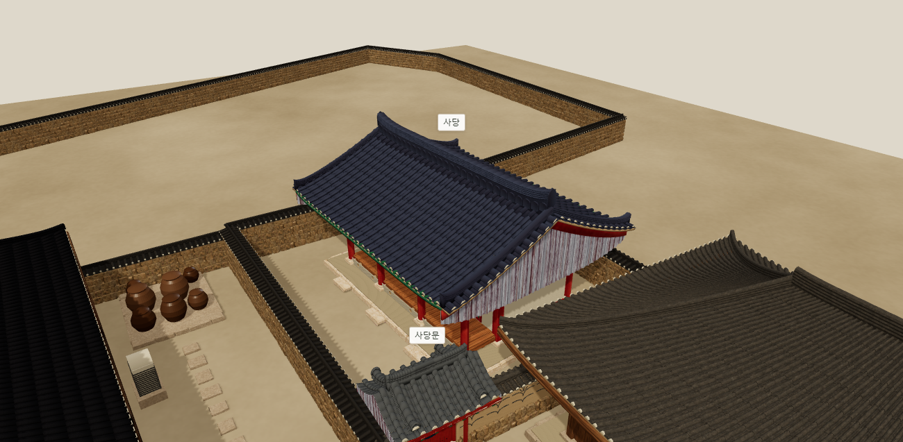

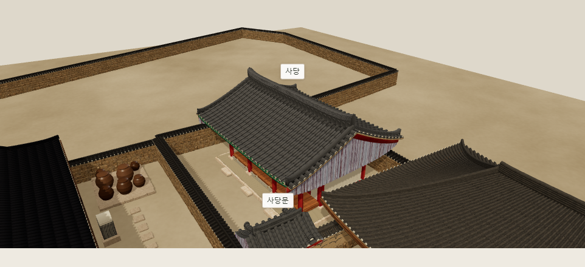

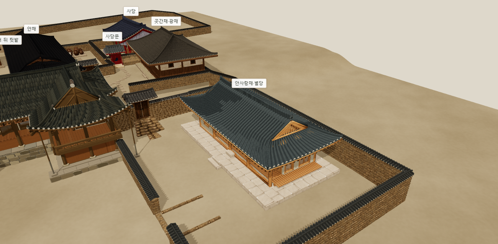

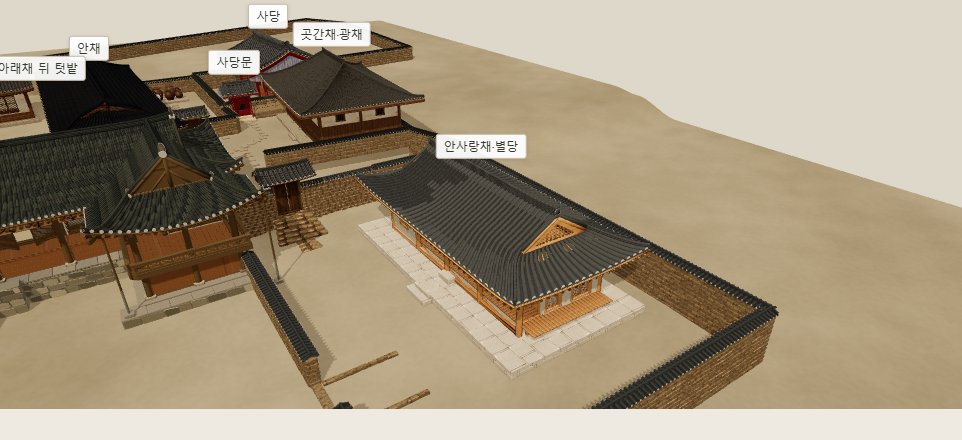

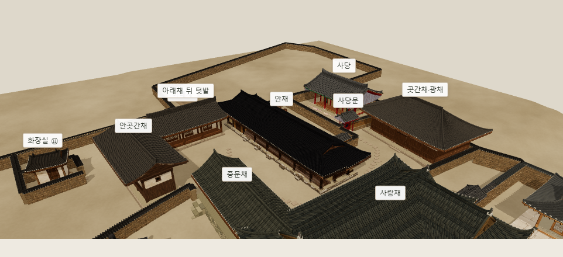

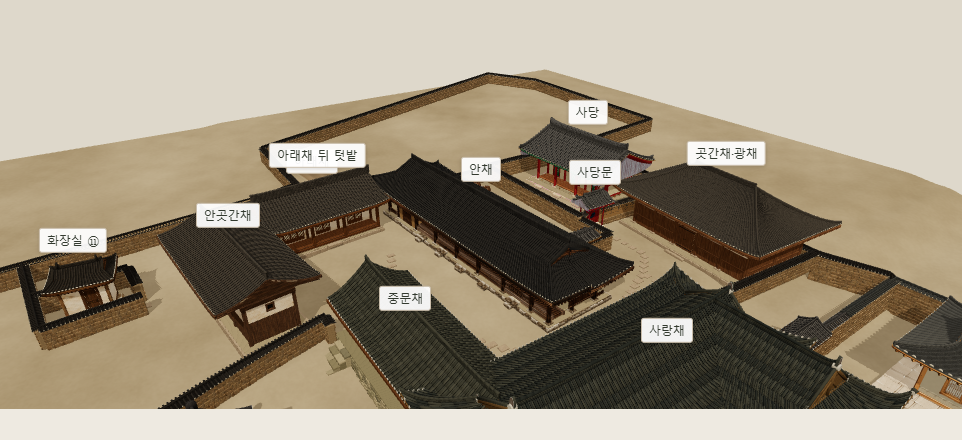
원본 기와 이미지의 바이트와 건물 형상은 바꾸지 않았습니다. 검토용 재질에서 채도·광택을 조정했고, 웹 변환에서도 원래 UV 좌표를 보존했습니다. 전체 지붕의 세부 미술 대조는 계속 진행 중입니다.
회벽의 단색 면을 다듬었습니다
안채·사당을 비롯한 단색 회벽과 흙벽 81개 메시, 총 20,991면에 얕은 흙손 자국과 안료 편차를 적용했습니다. 크림빛 회벽과 짙은 흙벽의 색을 구분하고, 부재마다 무늬 시작점·각도·크기를 달리했습니다. 원화 질감이 이미 있는 회벽은 유지했습니다.

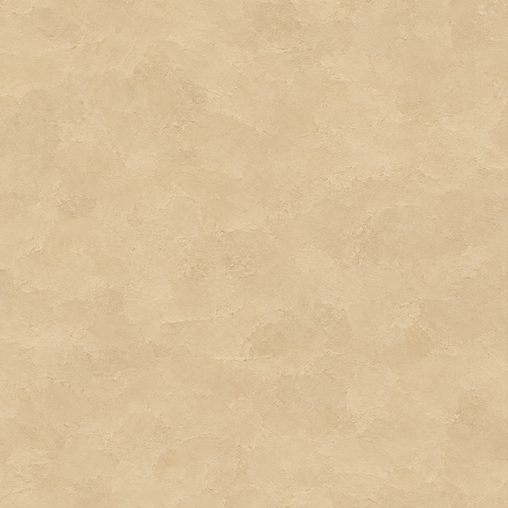

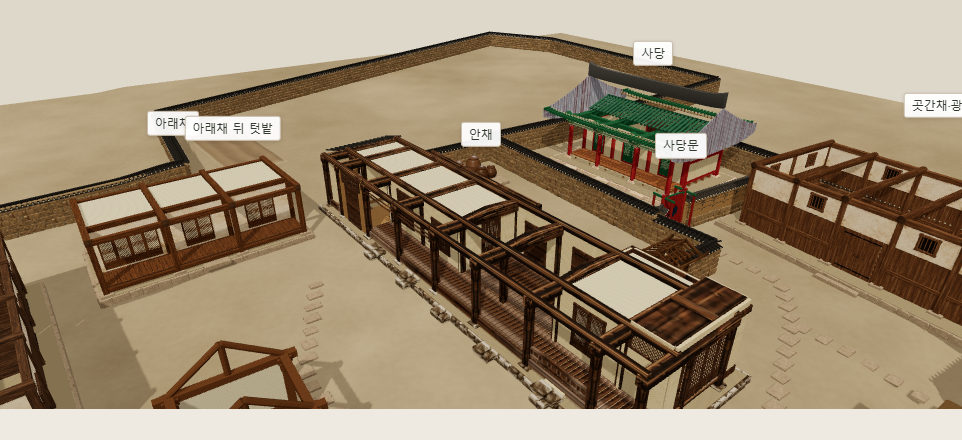
건물의 형상·기존 재질 슬롯·원래 UV 좌표는 보존했습니다. 새 회벽 좌표층과 웹 내보내기 좌표도 검사했습니다. 고택 전체의 화풍과 기단 돌의 형태는 계속 검토 중입니다.
질감 파일과 생성 설정
materials/hanok-cream-plaster-painted-v1.png · 전체 생성 프롬프트와 저장 위치
건물마다 다른 목재 결
같은 목재 그림을 넓게 공유하던 세 채만 각각 다른 결로 바꿨습니다. 아래채는 따뜻하고 잔 결, 안곳간채는 어둡고 그을린 결, 곳간채는 마르고 넓은 결입니다. 기둥과 판재마다 기존의 서로 다른 결 시작점을 유지해 반복을 줄였습니다. 다른 건물의 고유 원화, 특히 승인된 창고 목재는 유지했습니다.


세 화면은 각 건물의 구조를 보기 위해 지붕을 숨긴 3D 검토 화면입니다. 다른 각도와 실제 지붕을 포함한 모습은 위 3D 링크에서 건물 이름을 눌러 볼 수 있습니다. 전체 고택을 한 화풍으로 다듬는 작업은 계속 진행 중입니다.
기와·목재의 무광 표면을 맞췄습니다
고택 본 건물과 사당문의 기와·목재 재질을 같은 무광 기준으로 맞췄습니다. 재질마다 다르던 광택 연결을 정리하고 과한 표면 요철을 낮췄습니다. 건물별 색·마모·결과 기와 형상은 유지했습니다.
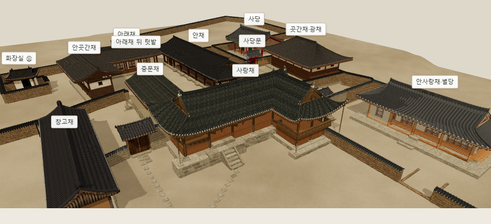
정자·나무는 이번 화풍 수정의 대상이 아닙니다. 현장 검토에서 조잡해 보인 초안 264개 오브젝트를 3D 장면에서 제거했습니다.
노란 표시 담장 접점
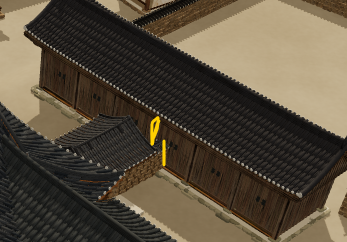
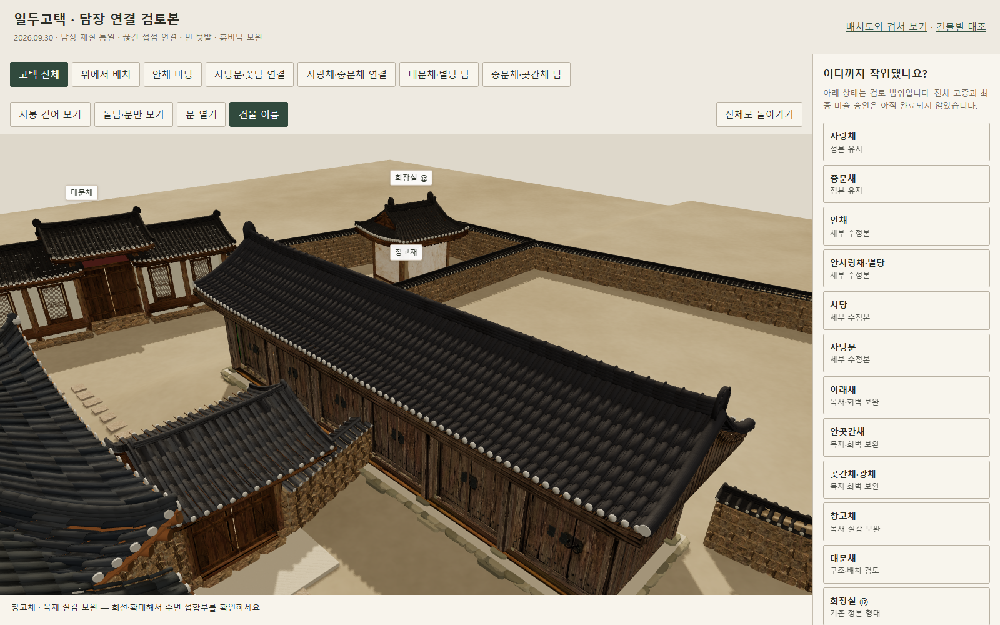
담장 중심선은 기존 y=3.8020에서 문 사이 기둥선 y=3.0226649로 정렬됐습니다. 현재 담장 끝 y=3.0226648이며 반대쪽 중문 연결점은 y=3.8020으로 유지됩니다.
창고 시각 비교
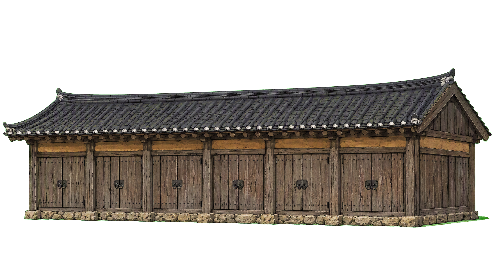
stage_08_complete.png · 원본 바이트 유지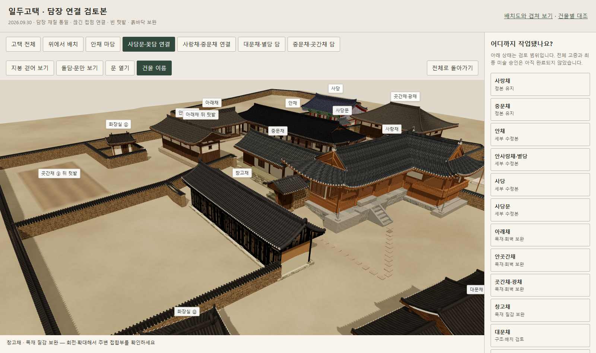
검증 경계
| 커밋 전 기준 | codex/hanok-hwalju-20260928 · HEAD 4f913017796f59672915ac74c8f3226613516ae6 |
|---|---|
| 현재 장면 | estate-fabric.blend SHA-256 bd921e4b0768bb7b9d0dba5c97fab3ce079e8f3ba649a2a9039334023b79450b. 웹 내보내기 manifest와 브라우저 로드 값 일치. |
| 정본 이미지 | stage_08_complete.png SHA-256 867495181c3507a29bca0efc43778bf6a958018b05992caba3fa40a01a3d9488. |
| 검사 범위 | 최신 Blender 장면과 웹 내보내기를 대상으로 자동 검사 33개 항목이 모두 통과했습니다. 기와·목재 반사, 재질·웹 좌표, 원본 기본 형상 3,298개 메시, 승인된 창고 목재 36,910면과 담장 정렬을 검사했습니다. 목재 165개 부재의 모서리 가중치와 실제 웹 면 구성도 일치합니다. 기본 형상은 보존되고 표시 표면의 모서리는 변경됐습니다. 브라우저에서 최신 해시와 같은 카메라의 수정 전후를 확인했습니다. 추가 목재·돌 상면·곳간채 뒤 간격 검사도 통과했습니다. 넓은 판벽과 전체 미술 검토는 다음 작업으로 남았습니다. 검사 결과 열기 |
| 적용 상태 | 로컬 검토용 후보입니다. 앱 런타임 에셋으로 승격하지 않았습니다. |
이 페이지는 현재 상태를 정직하게 공유하기 위한 스냅샷입니다. 전체 3D 링크는 로컬 서버가 실행 중일 때 열립니다.